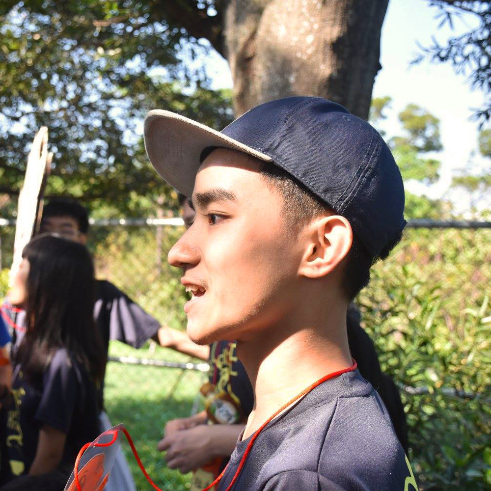

Henk Han Sheng Hsieh

My name is Han Sheng Hsieh, or you can call me Henk. I’m currently a year 3 student in the Department of Communication and Technology at National Chiao Tung University, Taiwan, studying human-computer interaction design and media strategy. Also, I am a visual designer in AppleCat Design Studio, specialising in image package design, layout design and infographic design. Recently, I have started working on user experience design and user interface design as my new field of career, and acquiring HTML/CSS skills by self-learning.
Studying communication isn’t merely about pursuing a future position for me, but also learning a whole new aspect of how people interact with each other. I believe the origin of creativity is based on the involvement of social interaction with different groups of people. During the past two years in college, I have been working on improving my professional skills by attending different clubs and events, yearning for more practices and a higher quality in my works. Pushing up myself to boundary and seize opportunities to keep myself well equipped.
Aside from my design experience, I’m also a socially cautious person who focus on political, gender, labor and educational issues in Taiwan and the world. Being a journalist of Castnet allowed me to participate in different social issues in person and equipped me with proper methods of constructing information and messages for communication, and identifying problems. I expect myself to incorporate the sense of social responsibility into my works in the future and create the design that conveys the meaningful messages to the public.